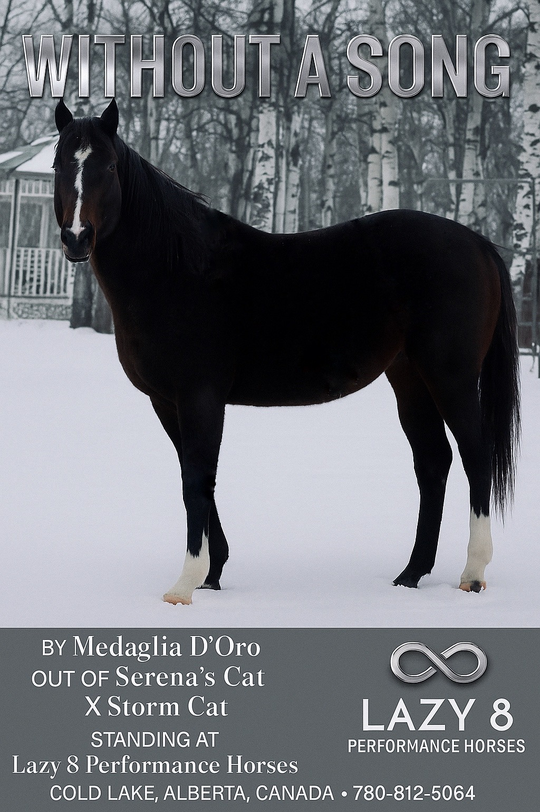
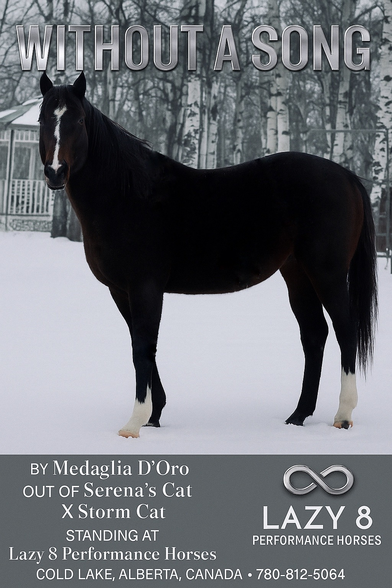

Lazy 8 Performance Horses
At Lazy 8 Performance Horses, we’re committed to producing exceptional Thoroughbred and Quarter Horse athletes with the heart, speed, and soundness to perform at the highest levels. Our breeding program focuses on proven bloodlines, correct conformation, and natural athletic ability — the foundation of every great racehorse.
Each cross is made with intention, blending pedigree strength with performance potential. From foals to future champions, our horses are bred to run with purpose, built to last, and raised with the care and dedication that defines Lazy 8 Performance Horses.
Located in Cold Lake, Alberta, we take pride in developing horses that reflect our values — quality, integrity, and an enduring love for the sport of racing.
Contact
Phone: 780-812-5064
Without A Song
(Medaglia d’Oro — Serena’s Cat, by Storm Cat)
Without A Song, a striking son of Medaglia d’Oro and out of Serena’s Cat by Storm Cat, represents the union of two legendary bloodlines. His sire contributes proven class, stamina, and versatility, while his dam adds the brilliance, speed, and toughness that define the Storm Cat legacy.
Bred on a pedigree of performance, Without A Song offers balance, athleticism, and scope — the kind of cross that works beautifully with Northern Dancer, Mr. Prospector, and Storm Cat families. His foals are bred to carry the same competitive spirit and quality, built to perform from sprint to classic distances on both dirt and turf.
 

Instant Wyn
Broken Proposal
(2019 mare by Broken Vow — out of Strike Red, by Smart Strike)
Earner of nearly $90,000, Broken Proposal brings substance and class from one of North America’s most versatile sire lines. Her proven cross with Without A Song rates an A+ on the Sadler’s Wells × Fappiano nick — the same powerful combination seen in elite performers like Songbird, Mshawish, and Plum Pretty.
This match blends Medaglia d’Oro’s stamina and scope with Broken Vow’s durability and tactical speed. The resulting foals are expected to carry athletic balance, trainable minds, and commercial appeal.

Hazy Storm
(Category Five × Kimco Lady, by Great Nation)
Inbreeding: Northern Dancer 3×3 • Bold Ruler 4×4
Hazy Storm is a beautifully bred Thoroughbred mare combining the elite speed influence of Storm Cat with the stamina and class of Northern Dancer.
Her sire, Category Five, was a winning, stakes-siring son of Storm Cat and the Leading Thoroughbred Sire in North Dakota for three consecutive years (2007–2009). From nine foal crops, he sired five stakes winners and total progeny earnings of $1.8 million. He is out of a stakes-placed Nodouble mare and traces to the influential foundation mare Cool Mood.
Her dam, Kimco Lady, though unplaced in one start, proved herself in the breeding shed as a stakes producer with 11 foals to race, 9 winners, and progeny earnings of $666,089. The second dam, Great Nation, was a stakes winner and stakes-producing mare, with 8 winners from 10 foals and progeny earnings of $439,654.
- Northern Dancer 3×3 — balance, athleticism, and proven class
- Bold Ruler 4×4 — brilliance and speed through a classic sire line
- From the influential Cool Mood family of champions and producers
🎵 Nick with Without A Song
Hazy Storm nicks exceptionally well with Without A Song (Medaglia d’Oro – Serena’s Cat, by Storm Cat) — a modern blend of Sadler’s Wells and Storm Cat, two of the most successful influences in North American pedigrees.
This cross reinforces the proven Sadler’s Wells / Storm Cat pattern that has produced elite performers such as Songbird, Mshawish, and Catch a Glimpse. It marries Medaglia d’Oro’s stamina and scope with Category Five’s speed and power, promising foals with balance, athleticism, and substance.
- Strong, correct frames and exceptional toplines
- Fluid, ground-covering movement
- Excellent minds and trainable temperaments


Tokyo Drifter
(Bold Executive × Rhythm daughter)
Earnings: $70,037
Her sire, Bold Executive, earned $365,305 on the track and became a Leading Canadian Sire in 2003 and 2004. He also achieved the remarkable feat of being the Leading North American All-Weather Sire by Progeny Earnings (Sept. 2007) — surpassing even A.P. Indy that year. Known for passing on his speed, strength, and heart, Bold Executive’s offspring have succeeded at all levels of competition, making him a versatile sire of racehorses and sport prospects alike.
Tokyo Drifter’s dam line carries equal strength. Her dam sire, Rhythm, was sired by Mr. Prospector out of Dance Number, a Grade I-winning daughter of Northern Dancer. Rhythm’s exceptional career earned him the title of 1989 U.S. Champion 2-Year-Old Colt with lifetime earnings of $1,592,532. This family combines brilliance and refinement, producing both soundness and the natural balance so valued in performance bloodlines.
Tokyo Drifter’s pedigree connects many of the great classic influences — Bold Ruler, Mr. Prospector, and Northern Dancer — in a way that promotes speed, versatility, and scope.
💫 Pedigree Insight
Tokyo Drifter combines the Bold Ruler and Mr. Prospector influences through her sire Bold Executive and dam sire Rhythm, bringing proven lines of speed, athleticism, and refinement. When paired with Without A Song (Medaglia D’Oro – Serena’s Cat, by Storm Cat), the pedigree becomes exceptionally well-balanced — uniting the Sadler’s Wells / Storm Cat / Mr. Prospector / Northern Dancer families that have shaped many of modern racing’s elite performers.
This pairing mirrors the same powerful genetic patterns found in champions like Songbird and Mshawish, both bred on the Medaglia D’Oro × Mr. Prospector-line cross. The result is an A+ Nick Rating, recognized for producing foals with balance, class, and long-term athletic potential — a true meeting of brilliance and stamina.
Miss Hesi
Miss Hesi
Stakes-winning mare • A+ potential with Without A Song. Poised to dominate Alberta tracks.
(No Hesitation × Insightofanofficer, by Officer)
Foaled: March 24, 2016
Record: 12 starts — 3–0–0, $63,113
Blacktype: 1st Sturgeon S. (at 2) • 1st Alberta Oaks (at 3)
Miss Hesi is a tough, classy mare who showed speed and determination early, capturing the Sturgeon Stakes at two and returning at three to win the Alberta Oaks. By No Hesitation and out of Insightofanofficer (by Officer), she blends proven North American performance lines with the kind of honest speed and willingness that translate into athletic, versatile foals.
Correct, forward, and sensible, Miss Hesi brings a race-tested profile and a tidy page — ideal for breeding for both soundness and competitive instinct.
🌟 Cross Potential
The pairing of Miss Hesi and Without A Song (Medaglia D’Oro – Serena’s Cat, by Storm Cat) represents an exciting blend of proven race performance and elite pedigree. Miss Hesi contributes the raw speed and tenacity that earned her multiple stakes victories on Alberta soil, while Without A Song adds the classic scope, balance, and class of the Medaglia D’Oro line.
Foals from this cross are expected to inherit exceptional athleticism, courage, and trainable temperaments — traits ideally suited for Western Canadian racing. With Miss Hesi’s local grit and Without A Song’s international quality, their offspring have every potential to dominate Alberta tracks with speed, consistency, and heart.
Miss Mighty 109
She Can Fly 109
Special Flybye / Miss Dashing Vana